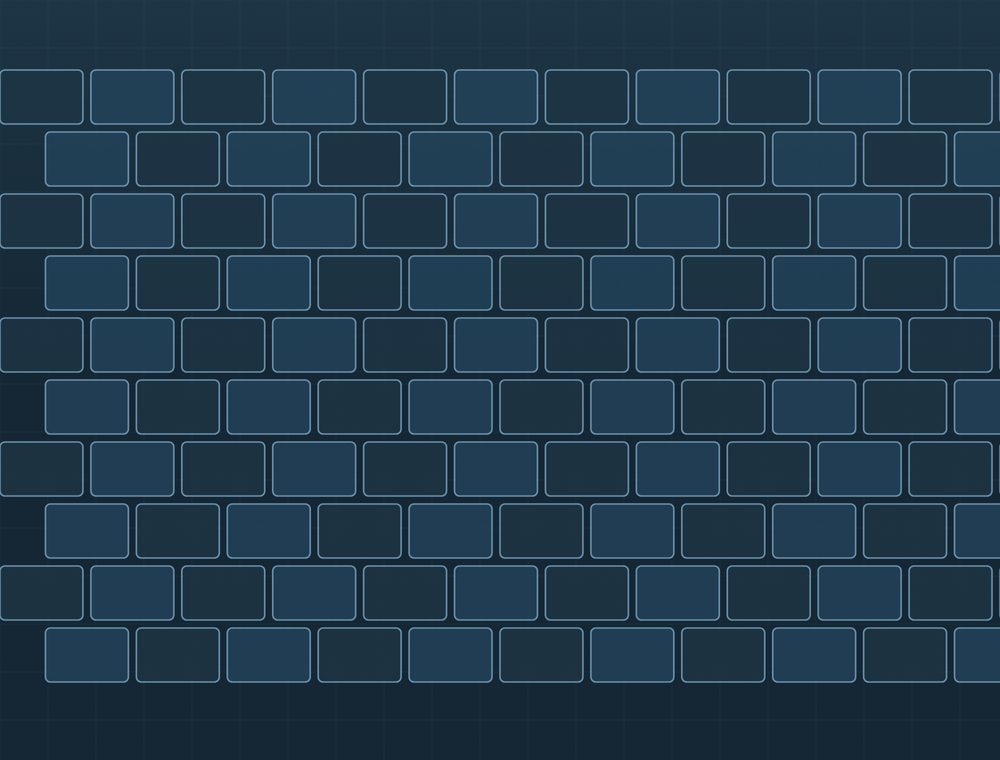
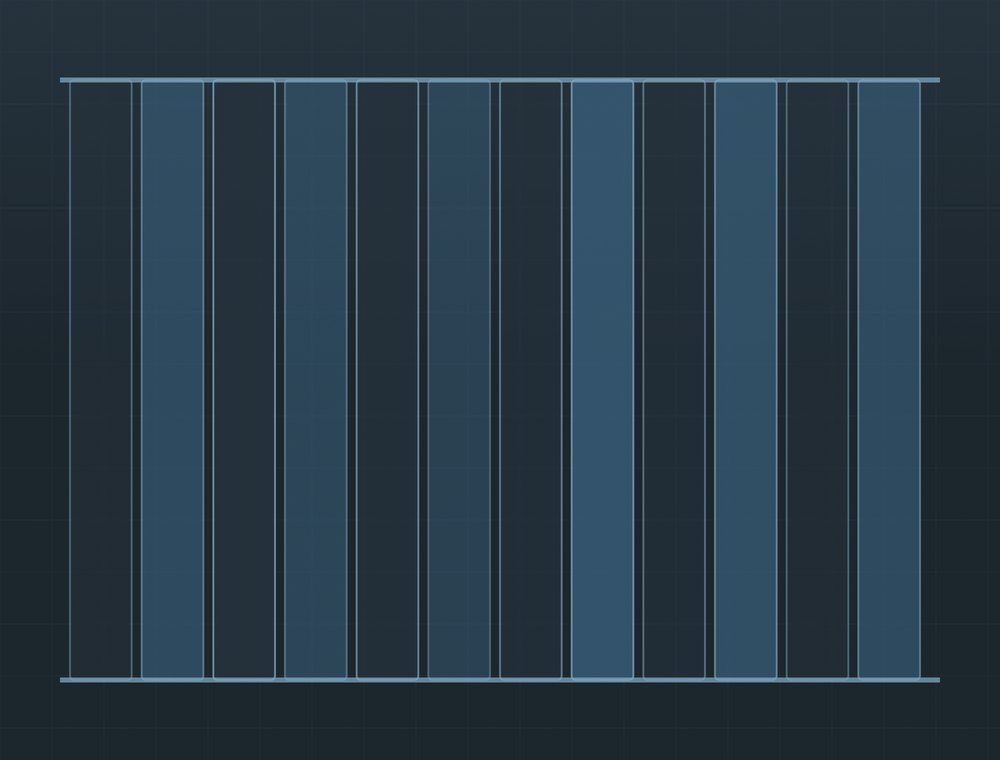
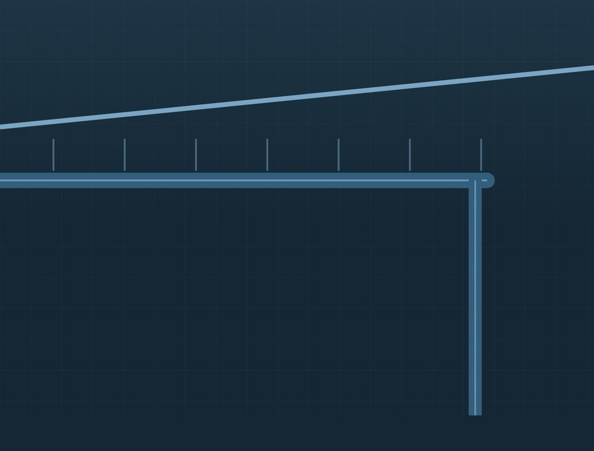
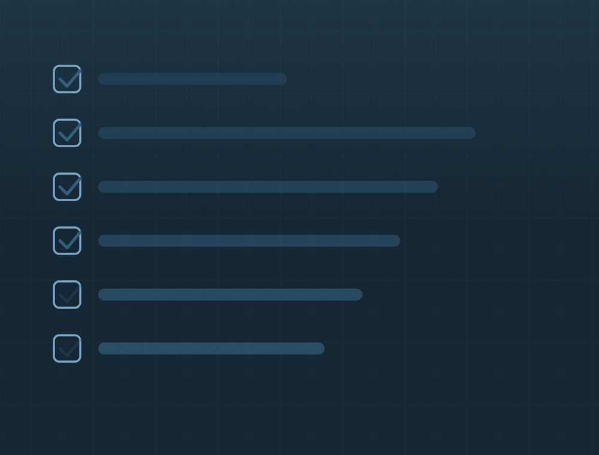

Mitä teemme
Neljä palvelukokonaisuutta. Kaikki voidaan tehdä joko erillisenä työnä tai osana suurempaa kokonaisuutta.
Katteen uusiminen

Vanhan katteen purku ja uuden asennus. Aluskate, ruoteet ja läpiviennit käydään läpi ja uusitaan tarvittaessa samalla.
- Vanhan katteen purku ja jätehuolto
- Aluskate ja ruoteet
- Tiilikatteen asennus
- Huopakatteen asennus
- Läpiviennit ja tiivistykset
Peltikatot

Konesaumatut ja profiilipeltikatot uudiskohteisiin ja saneeraukseen. Työhön kuuluvat saumat, kiinnitykset ja pellitykset.
- Profiilipeltikatot
- Konesaumakatot
- Pellitykset ja listat
- Peltikaton huoltomaalaus
- Lumiesteet ja kattosillat
Räystäät ja sadevedet

Räystäskourut, syöksytorvet ja niiden korjaus. Sadevedet ohjataan katolta maahan ja pois perustusten vierestä.
- Räystäskourut ja syöksytorvet
- Kourujen puhdistus ja korjaus
- Otsalaudat ja räystäslaudoitus
- Sadevesien ohjaus maahan
Kattoturvatuotteet

Lumiesteet, kattosillat, tikkaat ja kattoluukut. Nämä tarvitaan, jotta katolle pääsee huoltamaan ja nuohoamaan turvallisesti.
- Lumiesteet
- Kattosillat ja tikkaat
- Turvakiskot ja kiinnityspisteet
- Kattoluukut ja huoltoluukut
Kysymyksiä
Kuinka usein katto pitää tarkastaa?
Katon kunto kannattaa katsoa säännöllisesti ja aina rajujen sääilmiöiden jälkeen. Kourut kannattaa puhdistaa vähintään kerran vuodessa, koska tukkeutunut kouru ohjaa veden seinälle.
Mistä vuoto yleensä alkaa?
Harvoin katteen keskeltä. Tavallisimpia paikkoja ovat läpiviennit, jiirit, piipun juuri ja räystäs. Siksi ne katsotaan ensin.
Tarvitaanko kattoremonttiin lupa?
Katteen vaihto samaan materiaaliin ei yleensä vaadi lupaa, mutta materiaalin tai värin vaihto voi vaatia toimenpideluvan. Lupaehdot vahvistaa aina kunnan rakennusvalvonta.
Saako kattotyöstä kotitalousvähennystä?
Asunnon kattotyön työosuudesta voi tietyin edellytyksin saada kotitalousvähennystä. Uudisrakentaminen ei oikeuta vähennykseen. Ehdot löytyvät osoitteesta vero.fi.
Pyydä tarjous
Soita tai lähetä tarjouspyyntö, niin sovitaan katselmus.